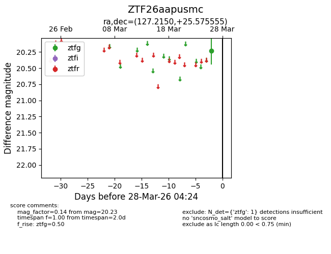
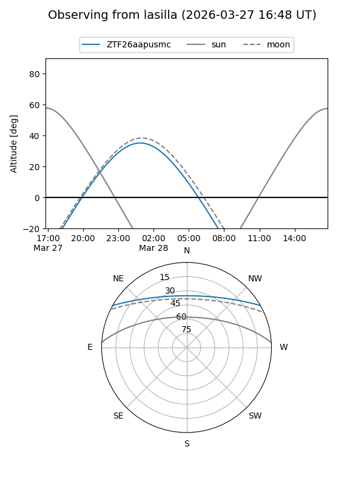
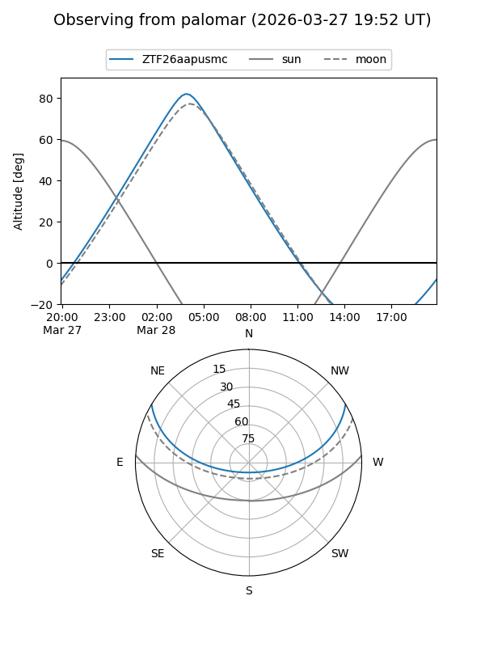

ZTF26aapusmc
Target ZTF26aapusmc at 2026-03-28 04:27
Aliases and brokers:
FINK: link
Lasair: link
ALeRCE: link
alt names
ZTF26aapusmc (ztf,fink_ztf)
Coordinates:
equatorial (ra, dec) = 127.2150,+25.57555
equatorial (HMS+DMS) = 08:28:51.61,+25:34:32.00
galactic (l, b) = (198.2967,+31.86469)
Flags:
Photometry:
last ztfg=20.23
1 ztfg detections
Lightcurve

Visibility


Additional plots